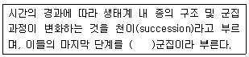
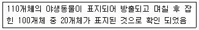
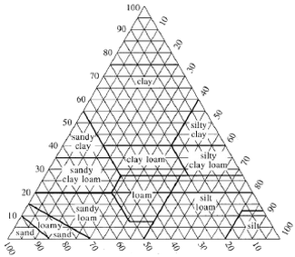
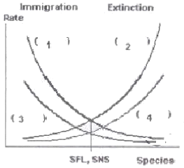
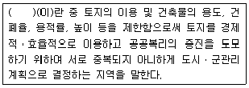
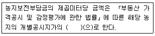
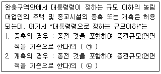
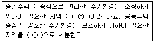
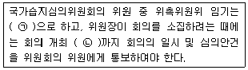
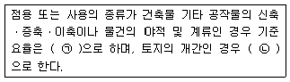

자연생태복원기사(구) (2015-05-31 기출문제)
1과목: 환경생태학개론
1. 다음 중 개체군 변동의 유형이 아닌 것은?
- 주기형
- 생활형
- 평편형
- 급변형
(정답률: 57%)

2. 사막은 열대, 온대, 한 대 어느 지역에도 존재하며, 사막은 낮과 밤의 온도차가 30℃에 이를 정도로 기온차가 심한 지역이다. 이러한 사막의 연간 강수량에 대한 표현 중 맞는 것은?
- 연간 강수량이 50mm 미만인 지역
- 연간 강수량이 150mm 미만인 지역
- 연간 강수량이 250mm 미만인 지역
- 연간 강수량이 500mm 미만인 지역
(정답률: 69%)
3. 중금속에 오염된 어느 늪지에 다음의 생물이 살고 있다. 생물농축이 일어날 경우 생체 내 중금속 농도가 가장 높은 생물은?
- 하루살이
- 피라미
- 배스
- 식물성 조류
(정답률: 86%)
4. 다음 설명의 ( )안에 알맞은 용어는?

- 최종(final)
- 극대(maximum)
- 극상(climax)
- 극단(extreme)
(정답률: 89%)
5. 두 개체군 상호간에 불이익을 초래하는 관계는?
- 기생
- 포식
- 편리공생
- 경쟁
(정답률: 79%)
6. 지구온난화 및 온실효과의 원인이 되는 가스가 아닌것은?
- 아산화질소(N20)
- 메탄(CH4)
- 아황산가스(SO2)
- 염화불화탄소(CFCs)
(정답률: 47%)
7. 야생동물 생태조사에서 채택한 포획-재포획의 조사 방법 결과 다음과 같은 자료가 주어졌을 때, 총 개체군의 크기는 얼마인가?

- 500개체
- 550개체
- 600개체
- 650개체
(정답률: 82%)
8. 다음 중 세계의 열대우림 지역이 아닌 곳은?
- 아마존 분지
- 서부 아프리카
- 인도네시아
- 북아메리카
(정답률: 81%)
9. 지구온난화를 유발하는 이산화탄소의 양을 감축하여 온실가스에 대한 대비책 마련을 위해 채택된 기후변화 협약과 관련된 것은?
- 몬트리올 의정서
- 워싱턴 의정서
- 제네바 의정서
- 교토 의정서
(정답률: 74%)
10. 섬생물지리이론에 관한 설명으로 틀린 것은?
- 하나의 섬에서 종의 수와 조성은 역동적이다.
- 어떤 섬에서 생물종수는 이주와 사멸의 균형에 의해 결정된다.
- 섬이 클수록, 육지와 멀리 떨어질수록 종수는 낮다.
- 경관계획과 자연보전지구 지정에 유용한 이론이다.
(정답률: 80%)
11. 나사말처럼 뿌리를 물 밑 바닥에 고착시키고 잎과 줄기를 물속에 잠기도록 하여 생활하는 식물은?
- 정수식물
- 부생식물
- 부엽식물
- 침수식물
(정답률: 80%)
12. 다음 환경포텐셜의 개념 중 종의 공급포텐셜에 적합한 설명은?
- 종의 생육, 서식과 관계
- 생태계의 시간적 변화가 어떤 과정을 거쳐 어느 정도 의 속도로 진행
- 식물의 종자나 동물의 개체 등이 다른 곳으로부터 공 급될 가능성
- 기후, 지형, 토양, 수환경 등의 토지적 조건이 특정 생 태계 성립에 적당한가를 나타나는 것
(정답률: 74%)
13. 어떤 식물이 충분히 빛이 쪼이는 곳에서 생육 할 때보다 그늘에서 생육하는 경우에 토양 속의 아연 요구량이 적게 필요하다고 가정한다면, 이 내용에 적합한 법칙은 다음 중 무엇인가?
- Allen의 법칙
- Bergmann의 법칙
- Gause의 경쟁배타 법칙
- Liebig의 최소량 법칙
(정답률: 71%)
14. 호수에서 남조류(blue-green algae) bloom을 주도 하는 인자가 아닌 것은?
- 낮은 N/P 비율
- 풍부한 동물성플랑크톤
- 20℃ 이하의 낮은 수온
- 움직임이 별로 없는 조용한 물의 상태
(정답률: 62%)
15. 종다양성지수는 Shannon Index(H)=∑Pi log Pi로 나타내곤 하는데 여기서 Pi란 무엇인가?
- i번째 종의 상대적 균등도
- i번째 종의 절대적 우점도
- i번째 종의 절대적 생물량
- i번째 종의 상대적 풍부도
(정답률: 57%)
16. 점이대 또는 추이대(ecotone)의 설명으로 틀린 것은?
- 갑작스런 변화가 일어나는 지점이다.
- 가장자리 효과(edge effect)가 나타난다.
- 생물다양성이 감소하는 양상이 나타난다.
- 해변의 조간대가 점이대의 좋은 예이다.
(정답률: 83%)
17. 다음 중 생태계 구성요소와 그 역할에 대한 설명으로 틀린 것은?
- 생산자 : 녹색식물을 먹는 초식동물을 말한다.
- 소비자 : 종속영양생물로 육식동물을 말한다.
- 무기환경 : 빛, 공기, 물 등을 말한다.
- 분해자 : 낙엽, 동물사체 등을 분해하는 생물을 말한다.
(정답률: 75%)
18. 호수로 유입되는 영양물질의 부하를 줄이는 방법이 아닌 것은?
- 비료의 양을 늘려 농작물의 생산량을 늘린다.
- 유역 유입하천에 하수처리장을 건설한다.
- 하수처리장에서 질소와 인의 제거율을 높인다.
- 가정에서는 무린 세제를 사용한다.
(정답률: 86%)
19. 오존의 환경오염에 관한 설명으로 가장 거리가 먼 것은?
- 자동차배출가스가 오존오염의 주원인이라 할 수 있다.
- 오존은 주로 이산화질소와 탄화수소가 태양광선과 반응하여 생성된다.
- 오존층은 지구 상층부에서 적외선을 막아주기 때문에 생물이 살아갈 수 있는 환경을 만들어 준다.
- 일사량이 많고 고온인 여름철에 주로 오존 농도가 높다.
(정답률: 75%)
20. 자연계의 생산과 분해에 있어서 광합성 세균 중 무산소성 광합성 세균이 아닌 것은?
- 적색황세균 : Frankia
- 자색 비유황세균 : Ehodospirllum
- 녹색황세균 : Chlorobium
- 녹색 비유황세균 : Chiorflexus
(정답률: 54%)
2과목: 환경계획학
21. “국토의 계획 및 이용에 관한 법률” 시행령 상용도지구의 분류 중 하나인 경관지구는 다시 세가지 종류의 지구로 세분화하여 구분하고 있다. 다음중 경관지구의 종류가 아닌 것은?(오류 신고가 접수된 문제입니다. 반드시 정답과 해설을 확인하시기 바랍니다.)
- 자연경관지구
- 수변경관지구
- 시가지경관지구
- 해안경관지구
(정답률: 66%)
22. 관할수역의 면적 및 인구규모, 용도지역의 특성등을 감안하여 대통령령이 정하는 기준에 따라 특별시ㆍ광역시ㆍ특별자치시ㆍ시 또는 군의 조례로 정하도록 하고 있는, 용도지역 안에서의 용적률의 최대한도 중 모두 맞는 것은?
- 주거지역 500% 이하, 계획관리지역 100% 이하
- 상업지역 1200% 이하, 생산관리지역 70% 이하
- 공업지역 300% 이하, 농림지역 50% 이하
- 녹지지역 100% 이하, 생산관리지역 70% 이하
(정답률: 58%)
23. 퍼머컬쳐의 기본원리가 되는 자연생태계의 특성이 아닌 것은?
- 다양성
- 순환성
- 안정성
- 종속성
(정답률: 70%)
24. 다음중 “환경지표” 개념에 대한 설명으로 틀린 것은?
- 환경에 관한 어떤 상태를 가능한 정량적으로 평가하는 것
- 정책목표를 개략적으로 제시하고 정책효과를 평가하는 기초가 되는 것
- 환경의 상태나 환경정책의 추진상황을 측정하는 것
- 환경자료를 필요에 따라 가공하여 환경 현황이나 환경정책을 평가하는 재료로써 사용하는 것
(정답률: 58%)
25. 「국토의 계획 및 이용에 관한 법률」 상 관리지역의 세분화된 용도에 해당하지 않는 것은?
- 일반관리지역
- 계획관리지역
- 보전관리지역
- 생산관리지역
(정답률: 57%)
26. 다음 중 유네스코 MAB(man and the biosphere programme)에 대한 설명으로 옳지 않은 것은?
- 핵심지역, 완충지역, 전이지역의 3가지 기본요소로 구분한다.
- 생물권에 인간이 어떻게 영향을 미치는지를 연구하고 생물권의 파괴를 막기 위하여 출범하였다.
- 지속적인 위협을 받고 있는 보호지역의 한계를 극복하기 위해 생물권 보전지역을 지정하였다.
- 동ㆍ식물 개체군이 일정한 서식환경에서 증가 할 때 환경의 저항을 받아 일정한 상한에 도달해 평형상태를 지속한다는 개체군 성장한계이론을 기본으로 한다.
(정답률: 67%)
27. 다음 중 환경 영향평가 대상사업의 규모(A : 하수도법에 따른 분뇨처리시설, B : 폐기물 중간처분시설 중 소각시설로서 처리능력)로서 처리용량 표시가 맞는 것은?
- A : 100m3/일 이상, B : 50톤/일 이상
- A : 1003/일 이상, B : 100톤/일 이상
- A : 503/일 이상, B : 50톤/일 이상
- A : 1003/일 이상, B : 40톤/일 이상
(정답률: 55%)
28. 도심의 광장 녹지로부터 농촌, 자연지역에 이르는 생태 네트워크의 구축을 위해서 기존의 개발 전략을 변경해야 하는데 고려되어야 할 사항이 아닌 것은?
- 기존 녹지(삼림, 구릉지, 초지 등)를 적극적으로 보전 하고 최대한 계획에 활용한다.
- 경관향상, 에너지 절약, 비오톱 확대를 위해 옥상녹화 및 벽면 녹화를 통한 녹지면적을 최대한 확보한다.
- 공원 및 옥외공간 녹화는 다층구조보다는 단층구조가 유리하며 인공적인 식재기법을 활용하는 것이 바람직하다.
- 적극적인 우수침투가 가능하게 하여 원활한 수(水) 순환체계를 도모한다.
(정답률: 86%)
29. 다음 중 훼손된 자연을 회복시키고자 하는 세가지 단계에 해당되지 않는 것은?
- 복원
- 복구
- 대치
- 개발
(정답률: 83%)
30. 생태네트워크 계획에 있어서 비오톱의 조성에 관한 일반원칙이 아닌 것은?
- 비오톱은 가능한 넓은 것이 좋다.
- 같은 면적이면 분할된 상태가 좋다.
- 비오톱의 형태는 선형보다는 원형이 좋다.
- 불연속적인 비오톱은 생태적 통로로 연결시키는 것이 좋다.
(정답률: 79%)
31. 다음 생태도시계획의 기본영역(정치, 경제, 사회, 문화) 중 사회부문계획의 주요 방안에 포함 되지 않는 것은?
- 정보교류를 통한 사회적 의사소통 능력의 제고
- 환경보전과 시민참여를 위한 교육활동 강화
- 탈이기주의적 상호 관련의 증진
- 생활수단의 공동사용을 지향하는 근린사회의 형성
(정답률: 36%)
32. 다음 중 재생가능한 자원(renewable natural resources)이 아닌 것은?
- 식물
- 물
- 동물
- 석유
(정답률: 89%)
33. “국토의 계획 및 이용에 관한 법률”에서 정한 개발행위 허가 항목에 해당하지 않는 경우는?
- 토지거래 허가
- 건축물의 건축
- 토지 분할(건축물이 있는 대지의 분할은 제외한다.)
- 토지의 형질 변경(경작을 위한 경우로서 대통령령으로 정하는 토지의 형질 변경은 제외한다.)
(정답률: 56%)
34. 옥상녹화 및 벽면 녹화로 인한 기대효과로 가장 거리가 먼 것은?
- 에너지 절약
- 도시환경 개선
- 소동물들의 서식처 제공
- 도시의 부족한 농업생산 공간 확보
(정답률: 82%)
35. 특별시장ㆍ광역시장ㆍ특별자치시장ㆍ특별자치도지사ㆍ시장 또는 군수는 도시민이 이용할 수 있는 공원녹지를 확충하기 위하여 필요한 경우에는 도시지역 안의 식생 또는 임상(林相)이 양호한 토지의 소유자와 해당 토지를 일반 도시민에게 제공하는 것을 조건으로 해당 토지의 식생 또는 임상의 유지ㆍ보존 및 이용에 필요한 지원을 하는 것을 내용으로 하는 계약을 체결할 수 있는 데 이를 무엇이라 하는가?
- 녹지협약계약
- 녹지지원계약
- 녹지임대계약
- 녹지활용계약
(정답률: 58%)
36. 다음 중 생태ㆍ자연도 1등급 기준으로 맞는 것은?
- 멸종위기 야생동ㆍ식물 5종이 살고 있는 습지
- 도입어류를 포함하여 어류가 15종 서식하는 자연호소
- 멸종위기 야행동물 2종 이상 번식하거나 생육장으로 중요한 자연 습지
- 최근 5년간 물새가 1만마리 이상 매년 도래하면서 종위기 야생동물인 조류가 평균 3종 이상 도래하는 습지
(정답률: 61%)
37. 하천 정비사업으로 인한 문제점 및 현상으로 적절하지 않은 것은?
- 공사 시 토사 유출로 인한 육수생태계 영향
- 낙차공, 수중보 등 설치로 인한 하천 유속의 원활
- 제방축조용 토사 부족시 토취장 개발로 인한 영향
- 하도정비, 공재채취, 고수부지 조성 등으로 자연환경 훼손
(정답률: 76%)
38. 환경부장관은 관계중앙행정기관의 장 및 시ㆍ도지사와 협조하여 해당 생태계의 보호ㆍ복원대책(우선 보호대상 생태계의 복원)을 바련하여 추진할 수 있는 바, 다음중 그 대상이 아닌 것은?
- 생물다양성이 특히 높거나 특이한 자연환경으로써 훼손되어 있는 경우
- 자연성이 특히 높거나 취약한 생태계로서 그 일부 또는 전부가 향후 5년 이내 훼손 될 가능성이 있는 경우
- 자연성이 특히 높거나 취약한 생태계로서 그 일부가 파괴ㆍ훼손 되거나 교란되어 있는 경우
- 멸종위기야생생물의 주된 서식지 또는 도래지로서 파괴ㆍ훼손 또는 단절 등으로 인하여 종의 존속이 위협을 받고 있는 경우
(정답률: 77%)
39. 다음 환경친화적 택지개발계획에 대한 설명으로 틀린것은?
- 모든 개발행위와 경제활동에서 환경을 배려하여 환경에 미치는 악영향을 최소화시키고자 하는 택지개발
- 자연환경에 해롭지 않은 개발을 추구암으로서, 지속적인 인간의 정주환경 및 생활양식 모색
- '환경보전형'과 '환경창조형'이 통합되는 문제해결방식의 미래지향적인 개념
- 지구환경의 보전과 주변 환경과의 친화를 목적으로 환경 친화적 계획요소를 적극 도입함으로써 인간과 자연 상호에게 유익함을 제공하면서 더불어 살아갈 수 있는 자연 친화적 개발
(정답률: 58%)
40. 자연환경보전의 기본계획을 위하여 지방자치단체에서 제시할 수 있는 시책으로 볼 수 없는 것은?
- 지역내 국립공원 보전 대책 추진
- 도시 내 구릉지 보전 대책 추진
- 비오톱, 습지의 보전 대책 추진
- 개발제한구역(Green Belt)의 합리적 보전 대책 추진
(정답률: 50%)
3과목: 생태복원공학
41. 대사에 포함된 함량은 0.03%에 지나지 않으며, 물 속의 생명체의 방향결정, 운동 및 호흡에 영향을 미치는 환경요인은 무엇인가?
- 이산화탄소
- 산소
- 질소
- 일광
(정답률: 58%)
42. 국지개체군이 존속하기 위해서 최소한으로 확보해야 하는 개체군의 크기는?
- 초기개체수
- 존속가능최소개체수
- 절멸확률 개체수
- 메타개체군
(정답률: 66%)
43. 담수역에 있어서 관수저항이 강한 식물(생존기간 85일간 이하)에 해당하는 것은?
- 들잔디, 골풀, 갈대, 회양목
- Kentucky bluegrass, 줄, 줄사철나무
- tall fescue, orchard grass, 돈나무
- perennial ryegrass, 영산홍, 송악
(정답률: 71%)
44. 생물공동체의 길드(guild)에 대한 설명으로 다른 것은?
- 동일한 생활자원을 비슷한 방법으로 이용하는 생물종의 그룹
- 길드를 구성하는 종은 고정적이지 않고 생활 패턴 단계에 따라 다름
- 같은 종은 성장단계에 따라 속하는 길드의 변화가 없음
- 성장 단계에 따라 같은 길드에 속하는 다른 종간의 관계는 변화함
(정답률: 74%)
45. 생태계복원의 근본개념이라고 볼 수 없는 것은?
- 생물과 인간의 공존방법 구축
- 생물종다양성의 확대
- 생물생황과 생태계의 파악
- 생태계 단수화의 촉진
(정답률: 80%)
46. 다음 중 생태 관련 설명으로 옳지 않은 것은?
- 개체군이란 생물의 생활단위가 되는 집단이다.
- 종족의 보전을 위해서는 일정한 개체수가 반드시 필요하다.
- 다른 종의 생물들이 모여서 이룩된 생물사회를 군집이라 한다.
- 자연생태계와 농립생태계, 도시생태계와 같은 각각의 생태계를 소생태계라 한다.
(정답률: 58%)
47. 인간의 간섭정도에 의한 생태계 종류 중 다른 하나는?
- 삼림생태계
- 하천생태계
- 경작지생태계
- 호소생태계
(정답률: 83%)
48. 생물자원이 인류 공동의 자산에서 국가 부의 원천으로 패러다임이 변화하면서 세계각국의 생물자원의 확보경쟁이 국제적 이슈로 등장하였다. 이와 관련된 국가적 협약은?
- 람사르 협약
- 나고야 의정서
- 교토 의정서
- 리우데자네이루 협약
(정답률: 50%)
49. 다음 중 옥상 생물서식공간으로 조성할 지역을 선정할 때 일반적으로 가장 중요한 기준이 되는 것은?
- 홍보효과
- 조기 녹화 가능성
- 건축물의 위치와 높이
- 지역민의 접근성
(정답률: 71%)
50. 지붕에 식생을 재배하는 것은 다양한 혜택을 준다. 생태적 가치를 높일 뿐 아니라 도시지역 등에서 우수 관리에 큰 도움을 준다. 이런 옥상 녹화시 1차적으로 고려해야 할 사항 중 가장 거리가 먼 것은?
- 지붕구조
- 방수방근시스템
- 식생기반토양층
- 서식가능 동물
(정답률: 69%)
51. 도로가 개설되면서 산림생태계가 단절된 구간에 육교향 생태통로를 설치하려고 한다. 다음 중 고려되어야 할 사항과 거리가 먼 것은?
- 중앙보다 양끝은 넓게 하여 자연스러운 접근을 유도
- 통로의 가장자리를 따라서 선반을 설치
- 통로 양측에 벽면을 설치하여 주변으로부터 빛, 소음, 천적 등으로 부터의 영향을 차단
- 필요시 통로 내부에 양서류를 위한 계류 혹은 습지를 설치
(정답률: 74%)
52. 토양 온도와 식물생육에 대한 설명 중 틀린 것은?
- 흙이 빨리 따뜻해지면 뿌리의 활동이 빨라지고, 양분을 빨리 흡수해 공급해 주기 때문에 잘 자란다.
- 적송을 심을 때는 마사토를 적게 사용함으로써 온도 상승을 어렵게 하여 뿌리의 착근을 빠르게 한다.
- 비닐 멀칭의 장점은 비료의 손실을 줄이고, 토양수분을 유지시키며 지온을 높여준다.
- 한여름 지온이 올라가는 시기에는 비닐 위에 볏짚 등으로 덮어주어 지온 상승을 억제해 주어야 한다.
(정답률: 58%)
53. 한국 하천습지에 생육하는 수생식물 중 부엽식물이 아닌 것은?
- 노랑어리연꽃
- 마름
- 자라풀
- 개구리밥
(정답률: 57%)
54. 미 농무성법에 의하여 토성을 분류할 때 모래 30%, 점토 60%, 미사 10%에 해당하는 토성은 무엇인가?

- C(Clay)
- L(Loam)
- CL(Clay loam)
- S(Sand)
(정답률: 60%)
55. 생태복원을 위해 다져진 토량 18,000m3을 성토할 때 운반토량은 얼마인가?(단, 토량변화율 L=1.25, C=0.9)
- 25,000m3
- 22,500m3
- 20,250m3
- 20,000m3
(정답률: 67%)
56. 다음의 골재에 관한 설명 중 옳은 것은?
- 천연 경량골재에는 팽창성 혈암, 팽창성 점토, 플라이애시 등을 주원료로 한다.
- 잔 골재의 절건비중은 2.7 미만이다.
- 골재의 표면 및 내부에 있는 물의 전체 질량의 절건 상태의 골재질량에 대한 백분율을 골재의 표면수율이라 한다.
- 질량으로 90% 이상을 통과시키는데 체 중에서 최소 치수의 체눈을 체의 호칭 치수로 나타낸 굵은 골재의 치수를 굵은 골재의 최대치수라 한다.
(정답률: 63%)
57. 다음의 습지식물 중 정수 식물종은?
- 매자기
- 붕어마름
- 부레옥잠
- 물수세미
(정답률: 66%)
58. 훼손지비탈면녹화용 식물로 구비하여야 할 요건이라 볼 수 없는 것은?
- 건조에 강하다
- 양분요구가 크다
- 척박지에 잘 자란다
- 번식이 용이하다
(정답률: 84%)
59. 옥상녹화시스템의 구성요소 중 배수층의 기능 및 시공시 주의사항과 가장 거리가 먼 것은?
- 배수는 식물의 생장과 구조물의 안전에 직결된다.
- 식물의 뿌리로부터 방수층과 건물을 보호하는 기능을 한다.
- 옥상녹화 시스템을 침수로 인해 식물의 뿌리가 익사 하는 것을 예방한다.
- 기존 옥상녹화 현장에서 발생하는 하자의 대부분인 배수불량으로 인한 것이다.
(정답률: 59%)
60. 다음 중 토양 구조(soil structure)별 설명이 틀린 것은?
- 단립구조 : 일반적으로 해안의 사질양토에서 발견되며, 거친모래입자가 단일 상태로 접합 되어 있고 특정구조를 나타내지 않는다.
- 이상구조 : 부식 함량이 적은 미사질 토양에서 때때로 발견되며, 이 구조는 소공극은 많지만 대공극이 없으므로 통기성 및 투수성이 나쁘다.
- 구상구조 : 유기물이나 석회가 많은 표층에서 많이 발달되며 특히 표토에서 잘 발달하나 토양공극이 큰 편이라 우수의 흡수도 및 토양침식에 대한 저항성이 나쁘다.
- 괴상구조 : 면이나 모서리가 잘 발달하여 다면체를 이루는 구조이다.
(정답률: 58%)
4과목: 경관생태학
61. 다음 적정 패치의 수를 결정하는데 관계성이 높은 요인들 중 관계가 가장 먼 것은?
- 패치수와 종풍부도
- 패치수와 종집합
- 패치수와 바람이동
- 패치수와 종의 행동반경
(정답률: 82%)
62. 경관생태학적 관점에서 보았을 때, 다음 중 큰 패치의 장점이 아닌 것은?
- 서식처, 네트워크 보호
- 종 이동을 위한 징검다리 역할
- 자연적인 간섭의 피해 최소화
- 내부종 개체군의 유지
(정답률: 67%)
63. 다음 중 경관의 안정성에 대한 설명으로 틀린 것은?
- 안정성은 경관의 간섭에 대한 저항하는 정도와 간섭으로부터의 회복력을 말한다.
- 생체량이 높은 경우 체계는 보통 간섭에 저항력이 높으며 간섭으로부터의 회복 또한 빠르다.
- 경관 전체 안전성은 현존하는 경관요소의 각 형태의 비율을 반영한다.
- 경관 모자이크의 안정성은 물리적 체계의 안정성, 간섭으로부터의 빠른 회복, 간섭에 대한 강한 저항성 등 세 가지 방식으로 증가한다.
(정답률: 46%)
64. 해양경관적 측면에서 해양의 구성요소에 대한 설명중 틀린 것은?
- 혼합갯벌 : 모래나 펄이 각각 50% 미만으로 섞여 있는 퇴적물로 구성된 것을 말함
- 사빈 : 여름에 해수욕장으로 이용되며, 파랑의 작용에 의하여 해안에 모래가 퇴적된 지형임
- 암반해안 : 해파에 의한 침식해안의 한 예로서, 주로 파도의 침식작용의 결과로 형성된다.
- 사구 : 해안사구는 육지와 바다 사이의 퇴적물 양을 조절하여 해안을 보호하고, 해안의 특유한 식생이 서식하여 중요한 서식처 지역임
(정답률: 55%)
65. 섬생물지리학에 기반한 자연보전지구 설계지침이 아닌 것은?
- 파편화되지 않은 경우가 파편화된 것보다 더 낫다.
- 큰 패치는 작은 패치보다 더 낫다.
- 전체유역, 이주로, 섭식장소(feeding grounds)등은 보전지역 내부보다 외부에 있는 것이 낫다.
- 서로 멀리 떨어져 있는 경우보다 보존지역들이 서로 가까이 있는 경우가 낫다.
(정답률: 80%)
66. 비오톱을 지속적으로 보전 관리해야 하는 이유중 하나는 그것이 한번 훼손되면 원상태로 재생되는데 오랜 시간이 소요되기 때문이다. 다음의 비오톱 타입 중 훼손 후 재생에 가장 오랜시간이 소요되는 것은?
- 빈영양수역의 식물
- 부영양수역의 식생
- 빈영양단경초지
- 동굴에만 서식하는 생물종
(정답률: 79%)
67. 다음 중 알베도(Albedo)의 정의로 맞는 것은?
- 생태계를 통해 손실되는 에너지의 양
- 생산성에서 소비되는 양을 제한 순 에너지
- 토양을 통해 유입되는 에너지의 총량
- 경관요소로 들어오는 태양에너지에 대해 반사되는 에너지의 비
(정답률: 69%)
68. 서식처가 도로 및 철도 조성에 의해 단절되었을 때, 경관생태학적으로 서식처를 연결시켜주기 위한 하나의 방법으로 야생동물 이동통로를 조성한다. 다음중 야생동물 이동통로 조성 시 주의해야 할 점이 아닌 것은?
- 동물들이 가장 많이 다닌 곳에 야생동물 이동통로를 설치해야 하며, 가능한 모니터링을 통하여 선정해야 한다.
- 중요한 동물이 무엇인지를 파악하여 야생동물 이동 통로의 유형을 선정해야 한다.
- 지역 내에 설치되어지는 야생동물 이동통로는 동일한 기능이 수행될 수 있도록 설치해야 한다.
- 동물이 이동하다 차량에 충돌하지 않도록 충돌방지 및 유도장치를 설치해야 한다.
(정답률: 76%)
69. 다음 중 가장자리 관리지침으로 적당하지 않은 것은?
- 숲 가장자리를 다른 가장자리 서식처와 연결 해야한다.
- 수평적 수직적 구조가 복합적이어야 한다.
- 종다양성을 높이기 위해 가능한 한 외래종 중심으로 식재한다.
- 많은 생물종에게 중요한 초본층을 식재해야 한다.
(정답률: 88%)
70. 하천은 경관요소에서 코리더(Corridor)로서 매우 중요한 기능을 한다. 다음 하천 코리더에 대한 설명 중 거리가 먼 것은?
- 하천은 선형(Line) 또는 대형(Strip)의 코리더로서 야생동물의 서식처 기능을 갖는다.
- 선형(Line)의 하천코리더에는 주연부종이나 일반종보다 희귀종이나 멸종위기종의 서식가능성이 높다.
- 하천코리더는 물, 침전물, 유기물, 영양물질등이 중력에 따라 이동함은 물론 야생동물도 일정한 행동권범위 내에서 하천 코리더를 따라 이동한다.
- 하천코리더는 서식처로서의 기능, 이동통로로서의 기능, 오염물질의 여과기능, 장벽의 기능, 종의 공급원 및 수요처 기능 등 생태적으로 매우 중요한 요소이다.
(정답률: 79%)
71. 항공 탑재체에 의한 원격탐사 종류가 아닌 것은?
- 항공기
- 기구 및 위성
- 조류탑재기
- 육안관찰
(정답률: 80%)
72. 다음 중 해안사구의 보전을 위한 복원 및 훼손 방지방법이 아닌 것은?
- sand-trap fence에 의한 모래 집적 방법
- 사구 높이를 인위적으로 높여주는 방법
- 해안 사구 식물의 식재 방법
- 원활한 해변모래 공급을 위한 해구지형의 준설방법
(정답률: 49%)
73. 다음 중 “등질지역”과 “결절지역”에 관한 설명으로 옳지 않은 것은?
- 등질지역인 경우 지역전체를 동일조건으로 본다
- 결절지역인 경우 개개의 지역성격이 다르기 때문에 지역 전체를 동일조건으로 간주할 수 없다.
- 일반적으로 지역은 등질지역과 결절지역을 되풀이 한다.
- 언덕 정상사면, 언덕 배사면, 골짜기의 저지와 같은 작은 결절지역이 모여 소유역이라는 등질지역을 이루고 구릉지라는 결절지역을 형성한다.
(정답률: 64%)
74. 울릉도가 독도보다 더 많은 생물종을 갖고 있다면 이는 어느 이론을 설명하는 것인가?
- 도서생물지리학이론
- 메타개체군 이론
- 동태적 보전이론
- 경쟁적 배제의 원리이론
(정답률: 84%)
75. 거시적 측면에서 자연생태경관의 유형으로 볼수 없는 것은?
- 자연 산림 경관
- 해안경관
- 자연보전지역
- 농촌경관
(정답률: 61%)
76. 다음은 도서생물지리학의 평형이론 그래프이다. 괄호 1, 2, 3, 4에 차례대로 맞게 쓴 것은?

- near, small, far, large
- near, far, small, large
- small, near, large, far
- small, large, far, near
(정답률: 40%)
77. 조각 모양의 규칙성과 불규칙성을 고려하는 지수에 대한 설명으로 틀린 것은?
- 둘레 : 면적비 값은 모양이 일정하더라도 크기가 증가하면 작아진다.
- 둘레 : 면적비 변형지수는 불규칙한 모양에 대해서는 값이 무한대로 커진다.
- 조각면적과 둘레원면적 비는 조각모양이 불규칙 할수록 1에 가까워진다.
- 프랙털 차원은 분절법, 격자법, 둘레/면적법 등으로 계산할수 있다.
(정답률: 48%)
78. 다음 중 코리더(Corridor)의 기능이 아닌 것은?
- 서식처
- 이통통로
- 여과기능
- 모자이크
(정답률: 74%)
79. 경관조각의 형태적 특성을 결정짓는 요소로 볼수 없는 것은?
- 선장성
- 굴곡성
- 내부면적
- 개체군의 크기
(정답률: 61%)
80. 다음 중 SLOSS(Single large or several small)의 이론에 대한 내용중 틀린 것은?
- 한 개의 큰 패치는 많은 생물종의 보호에 유리하다.
- 패치의 거리는 가깝게 조성하는 것이 생물종 보호에 유리하다.
- 패치 사이의 생물종의 이동을 돕기 위해 통로를 조성하는 것이 필요하다.
- 여러개의 작은 패치는 환경변화에 흔히 일어나기 쉬운 종의 사멸을 완충해준다.
(정답률: 66%)
5과목: 자연환경관계법규
81. 독도 등 도서지역의 생태계 보전에 관한 특별법상 특정도서에서 인화물질을 이용하여 음식물을 조리하거나 야영을 한 자에 대한 과태료 부과기준으로 옳은 것은?
- 100만원 이하의 과태료를 부과한다.
- 300만원 이하의 과태료를 부과한다.
- 500만원 이하의 과태료를 부과한다.
- 1천만원 이하의 과태료를 부과한다.
(정답률: 61%)
82. 다음은 국토의 계획 및 이용에 관란 법률상 용어의 뜻이다. ( )안에 가장 적합한 것은?

- 용도지역
- 용도지구
- 용도구역
- 개발밀도관리구역
(정답률: 74%)
83. 자연공원법상 용어의 뜻 중 “자연공원”에 속하지 않는 것은?
- 국립공원
- 도립공원
- 시립공원
- 지질공원
(정답률: 76%)
84. 야생생물 보호 및 관리에 관한 법류 시행규칙상 멸종위기 야생생물 1급(조류)에 해당하지 않는 것은?
- 흰꼬리수리 (Haliaeetus albicilla)
- 황새 (Ciconia boyciana)
- 검은머리갈매기 (Larus saundersi)
- 매 (Falco pere grinus)
(정답률: 59%)
85. 자연환경보전법령상 생태계보전협력금은 생태계의 훼손면적에 단위면적당 부과금액과 지역계수를 곱하여 산정ㆍ부과한다. 이 때 지역별 계수로 옳은 것은?
- 농립지역 : 2
- 생산관리지역 : 2.5
- 녹지지역 : 3.5
- 보전관리지역 : 4
(정답률: 63%)
86. 자연환경보전법규상 시ㆍ도지사 또는 지방환경관서의장이 환경부장관에게 보고해야 할 위임업무 보고사항 중 “생태마을의 지정실적” 보고횟수 기준은?
- 연 1회
- 연 2회
- 연 4회
- 수시
(정답률: 60%)
87. 다음은 농지법령상 농지보전부담금의 부과기준이다. ( )안에 알맞은 것은?

- 100분의 5
- 100분의 10
- 100분의 20
- 100분의 30
(정답률: 43%)
88. 독도 등 도서지역의 생태계 보전에 관한 특별법 시행규칙상 환경부장관이 이 법에 따라 특정도서를 지정하거나 해제ㆍ변경한 경우에는 지정일 또는 해제ㆍ변경일로부터 얼마이내(기준)에 관보에 이를 고시하여야 하는가?
- 5일 이내
- 10일 이내
- 15일 이내
- 30일 이내
(정답률: 60%)
89. 산지관리법사 “산지전용ㆍ일시사용제한지역”으로 지정될 수 있는 산지로 가장 거리가 먼 것은?
- 주요산줄기의 능선부로서 자연경관 및 산림생태계의 보전을 위해 필요하다고 인정되는 산지
- 지역주민의 임산물 소득 보전을 위해 필요한 산지
- 명승지, 유적지, 그 밖에 역사적ㆍ문화적으로 보전할 가치가 있다고 인정되는 산지
- 산사태 중 재해발생이 특히 우려되는 산지
(정답률: 80%)
90. 환경정책기본법령상 대기환경기준으로 옳지 않은 것은?
- 일산화탄소(CO) : 1시간 평균치 25ppm 이하
- 이산화질소(NO2) : 24시간 평균치 0.06ppm 이하
- 오존(O3) : 1시간 평균치 0.1ppm 이하
- 벤젠 : 연간 평균치 0.5μg/m3이하
(정답률: 58%)
91. 환경정책기본법령상 국토의 계획 및 이용에 관한 법률에 따른 주거지역 중 전용주거지역의 밤(22:00~06:00)시간대 소음환경기준은? (단, 일반지역이며, 단위는 Leq dB(A))
- 40
- 45
- 50
- 55
(정답률: 58%)
92. 백두대간 보호에 관한 법률 시행령상 보호지역중 완충구역에서의 허용행위에 관한 기준이다. ( )안에 알맞은 것은?

- ㉠ 100분의 150, ㉡ 100분의 100
- ㉠ 100분의 100, ㉡ 100분의 150
- ㉠ 100분의 130, ㉡ 100분의 100
- ㉠ 100분의 100, ㉡ 100분의 130
(정답률: 48%)
93. 다음은 국토의 계획 및 이용에 관한 법률 시행령에서 용도지역 중 주거지역의 세분사항이다. ( )안에 알맞은 것은?(오류 신고가 접수된 문제입니다. 반드시 정답과 해설을 확인하시기 바랍니다.)

- ㉠ 제2종전용주거지역, ㉡ 제3종일반주거지역
- ㉠ 제3종일반주거지역, ㉡ 제2종전용주거지역
- ㉠ 제3종전용주거지역, ㉡ 제2종일반주거지역
- ㉠ 제2종일반주거지역, ㉡ 제3종전용주거지역
(정답률: 43%)
94. 자연공원법상 특별히 보호할 필요가 있는 지역의 공원 자연보존지구의 결정과 관련한 사항으로 가장 거리가 먼 것은?
- 생물다양성이 특히 풍부한 곳
- 자연생태계가 원시성을 지니고 있는 곳
- 마을이 형성된 지역으로서 주민생활을 유지하는 데에 필요한 지역
- 특별히 보호할 가치가 높은 야생 동식물이 살고 있는곳
(정답률: 82%)
95. 습지보전법상 습지보호지역에 정당한 사유없이 돌 등을 채취하는 행위로 인해 받은 행위중지의 명령을 위반한 자에 대한 벌칙기준으로 옳은 것은?(관련 규정 개정전 문제로 여기서는 기존 정답인 2번을 누르면 정답 처리됩니다. 자세한 내용은 해설을 참고하세요.)
- 3년 이하의 징역 또는 2천만원 이하의 벌금에 처한다.
- 2년 이하의 징역 또는 1천만원 이하의 벌금에 처한다.
- 500만원 이하의 과태료에 처한다.
- 200만원 이하의 과태료에 처한다.
(정답률: 63%)
96. 국토기본법에 몇시된 “ 환경친화적 국토관리”를 위하여 국가 및 지방자치단체가 해야 할 일로 가장 거리가 먼 것은?
- 국토에 관한 계획 또는 사업을 수립ㆍ집행할 때에는 자연환경과 생활환경에 미치는 영향을 사전에 고려하여야 하며, 환경에 미치는 부정적인 영향이 최소화될 수 있도록 하여야 한다.
- 국토의 무질서한 개발을 방지하고 국민생활에 필요한 토지를 원활하게 공급하기 위하여 토지이용에 관한 종합적인 계획을 수립하고 이에 따라 국토공간을 체계적으로 관리하여야 한다.
- 산, 하천, 호수, 늪, 연안, 해양으로 이어지는 자연생태계를 통합적으로 관리ㆍ보전하고 훼손된 자연생태계를 복원하기 위한 종합적인 시책을 추진한다.
- 국제교류가 활발히 이루어질 수 있는 국토여건을 조성함으로써 대륙과 해양을 잇는 국토의 지리적 특성이 최대한 발휘되도록 하여야 한다.
(정답률: 74%)
97. 가음은 습지보전법령상 국가습지심의위원회의 고성 및 운영 등에 관한 사항이다. ( )안에 가장 적합한 것은?

- ㉠ 2년, ㉡ 7일전
- ㉠ 3년, ㉡ 7일전
- ㉠ 2년, ㉡ 14일전
- ㉠ 3년, ㉡ 14일전
(정답률: 46%)
98. 다음은 자연공원법규상 공원관리청이 규정에 의해 징수하는 점용료 등의 기준요율에 관한 사항이다. ( )안에 알맞은 것은?

- ㉠ 인근 토지 임대료 추정액의 100분의 25이상, ㉡ 수확예상액의 100분의 10이상
- ㉠ 인근 토지 임대료 추정액의 100분의 25이상, ㉡ 수확예상액의 100분의 25이상
- ㉠ 인근 토지 임대료 추정액의 100분의 50이상, ㉡ 수확예상액의 100분의 10이상
- ㉠ 인근 토지 임대료 추정액의 100분의 50이상, ㉡ 수확예상액의 100분의 25이상
(정답률: 72%)
99. 농지법규상 농지 전용허가신청서에 첨부하여야할 서류로 가장 거리가 먼 것은?
- 전용목적, 시설물의 활용계획등을 명시한 농지전용신고서
- 전용예정구역이 표시된 지적도 등본 또는 임야도 등본과 지형도
- 해당농지의 전용이 농지개량시설 또는 도로의 폐지 및 변경이나 토사의 유출, 폐수의 배출, 악취의 발생 등을 수반하여 인근농지의 농업경영과 농어촌 생활환경의 유지의 피해가 예상되는 경우에는 대체시설의 설치 등 피해방지계획서
- 전용하려는 농지의 소유권을 입증하는 서류(토지등기사항 증명서로 확인할 수 없는 경우에 한정한다.) 또는 사용승낙서ㆍ사용승낙의 뜻이 기재된 매매계약서 등 사용권을 가지고 있음을 입증하는 서류
(정답률: 26%)
100. 산지관리법상 보전산지 중 공익용산지에 포함되지 않는 산지는?
- 산림문화ㆍ휴양에 관한 법률에 따른 자연휴양림의 산지
- 임업 및 산촌 진흥촉진에 관한 법률에 의한 임업진흥권역의 산지
- 수도법에 따른 상수원 보호구역의 산지
- 자연공원법에 따른 공원구역의 산지
(정답률: 56%)